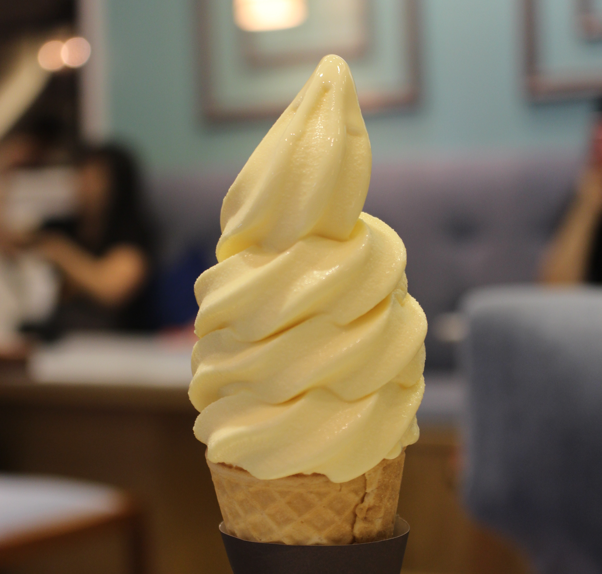

21 Agustus 2019
Pesona Cheesetart Ala Jepang
Tahun ini semakin banyak jajanan baru yang hits di Jakarta, salah satunya cheesetart. Cheesetart dikenal berasal Sapporo, Hokaido, Jepang. Kue ini didominasi dengan olahan keju. Bentuknya seperti kue pie dengan filling keju yang lembut. Bagi pecinta keju pasti menyukai kue dengan variasi rasa seperti ini.

Karena tertarik, saya pun mencoba untuk merasakan cheesetart, dan kebetulan untuk memenuhi hasrat saya yang satu itu, saya membeli cheestart di Ezo Cheesecakes. Di sini kita bisa membeli cheesetart secara satuan ataupun per paket. Kalau ingin tahu lebih jelasnya bisa kunjungi instagramnya @ezocheesecakes